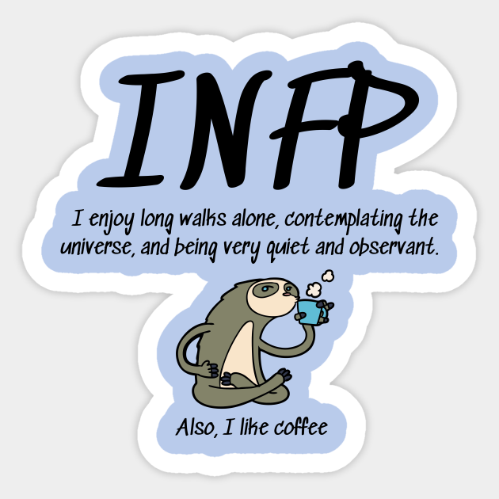

- 현실감각이 둔하다.
- 인간과 종교(정신세계)에 관심이 많다.
- 규칙을 몸서리치듯 싫어하며 반복되는 일상적인 생활을 싫어한다.
- 내면의 갈등이 심하며 감정의 기복이 심하다.
- 아이디어가 많으나 실행에 잘 옮기지 못한다.
- 멍 때리기를 좋아한다.
- 융통성 있는 계획을 선호한다.
- 예술을 좋아한다.
- 음악을 들으며 산책하는 것을 좋아한다.
- 선택 장애가 있다.
- 낮을 가린다.
- 혼자 해결하는 경향이 있다.
- 분위기에 민감하다.
- 우울할 때가 많다.
- 남한테 폐끼치는 것을 싫어한다.